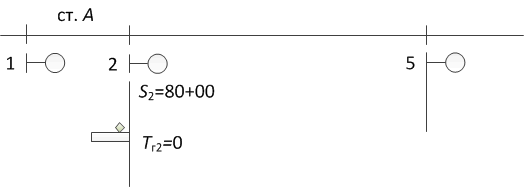
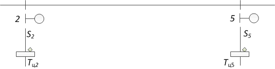

Зона дополнительного шунтирования
Защитный участок
Максимальная длина блок-участка
Минимальная длина блок-участка
Максимальная длина рельсовой цепи
Отличия АБТЦ от ЧКАБ
Определите ординату светофора той же серии, что и у светофора 2, если
Iз =
lзу =
Ответ:
Определите ординаты сигнальных точек между светофорами 2 и 5, если
S2 =
S5 =
S3 =
S4 =